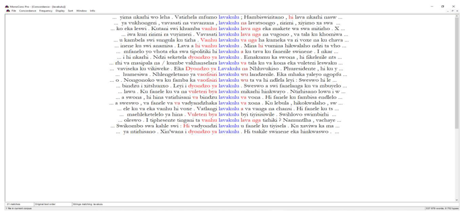
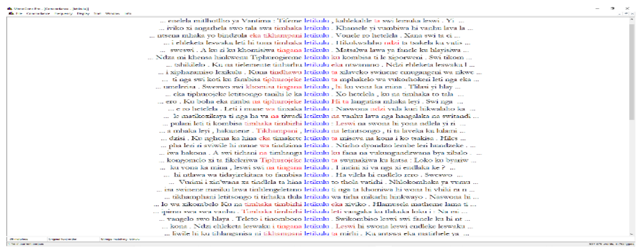
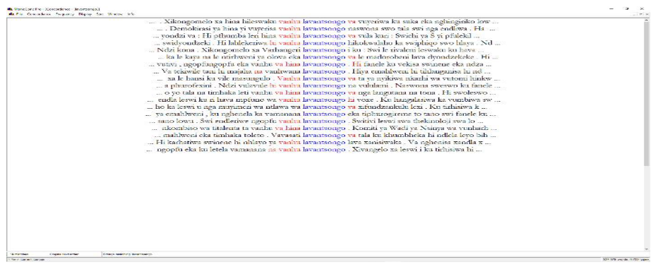

RAIL 2021Traduction automatique
Utilisation de MonoConc Pro pour enseigner et apprendre les collocations lexicales en Xitsonga
Traduction automatique, non relue par un humain. L'article original est la version de référence ; les phrases soulignées sont celles dont les contrôles automatiques n'étaient pas sûrs.
Proceedings of the 2nd Workshop on Resources for African Indigenous Languages (RAIL 2021), Journal of the Digital Humanities Association of Southern Africa.
Traduction par Ernst van Gassen (Arktos AI Lab), sous licence CC BY-SA 4.0 comme l'original. Réutilisation permise avec attribution ; partage des adaptations dans les mêmes conditions. Les auteurs originaux n'ont pas relu ni approuvé cette traduction.
Texte brut réutilisable, avec sa licence : Français · LICENCE
Affiliations
Mlambo Respect & Matfunjwa Muzi
South African Centre for Digital Language Resource
(SADiLaR), North-West University, Potchefstroom
South Africa
&
Adresses e-mail retirées pour la protection de la vie privée. Elles figurent dans le PDF original.
Résumé
Peu de ressources linguistiques ont été mises au point pour les langues autochtones en Afrique du Sud. Surprenant, ce sont aussi des langues officielles qui, constitutionnellement, partagent le même statut linguistique que les autres langues. L'un des défis majeurs pour le développement de ressources linguistiques de base est le manque de corpus numériques pouvant être utilisés pour entraîner et développer les ressources. Un tel défi a entravé l'utilisation de la technologie pour la recherche, l'apprentissage et l'enseignement dans les domaines des langues autochtones. Dans cette étude, nous avons utilisé MonoConc Pro, un concordancier, pour démontrer comment les utilisateurs de langues peuvent utiliser le logiciel pour afficher la collocation lexicale à partir d'un corpus à des fins d'enseignement et d'apprentissage. Nous avons illustré comment le corpus peut être utilisé simultanément avec la technologie du langage pour enseigner et apprendre des aspects de la linguistique sous la forme de collocations lexicales en Xitsonga. Un corpus monolingue Autshumato Xitsonga (AXMC) qui a été extrait du référentiel du Centre sud-africain pour les ressources linguistiques numériques a été utilisé comme données pour l'analyse. L’AXMC est un corpus qui a été recueilli et aligné semi-automatiquement au niveau des phrases dans le cadre du projet Autshumato. Pour rechercher les collocations lexicales, nous avons interrogé le corpus AXMC en utilisant le programme MonoConc Pro. Une recherche semi-automatique de collocataires des adjectifs Xitsonga lavakulu, letikulu, lavantsongo et letinene a été menée. L'étude a révélé que les collocations lexicales ou les mots qui coexistent avec les adjectifs sont les noms, les adjectifs, les possessifs et les relatifs. Il a également été observé que chaque adjectif entre fréquemment en collocation avec certains noms appartenant à une classe spécifique. Les résultats obtenus suggèrent un moyen pratique d'utiliser les technologies langagières pour explorer les corpus et examiner les modèles linguistiques pour l'enseignement et l'apprentissage. Nous espérons que cette ligne d'étude conduira à l'utilisation des ressources linguistiques modernes pour examiner les traits linguistiques dans les langues autochtones.
Mots-clés
MonoConc Pro, Collocations lexicales, Xitsonga, Concordancier, Ressources linguistiques
1 Introduction
Il existe une lacune importante dans le développement des langues autochtones officielles d’Afrique du Sud, en particulier dans l’utilisation des ressources linguistiques pour la recherche, l’enseignement et l’apprentissage. Certaines langues, comme l'anglais et l'afrikaans, ont reçu une attention préférentielle en termes de développement et d'utilisation de ressources linguistiques contemporaines, tandis que les langues indigènes avec moins de locuteurs, comme le siswati, l'isiNdebele, le tshivenda et le xitsonga, sont encore en cours de développement (Finlayson et Madiba 2002 tel que cité par Mlambo et al., 2021, p. 82). L'absence de ressources linguistiques contemporaines et de corpus appropriés nécessaires à la construction d'outils numériques pour les langues indigènes a entravé la recherche, l'apprentissage et l'enseignement dans ces langues à l'aide de technologies modernes. En outre, les questions politiques, culturelles et socio-économiques ont entravé le développement et l’intégration des ressources linguistiques contemporaines dans les langues autochtones (Unesco, 2019). Pendant ce temps, les langues disposant de telles ressources et de tels corpus ont bénéficié dans les domaines de la recherche, de l’apprentissage et de l’enseignement (Yunus, 2017, p. 297).
Il y a eu quelques développements en Afrique du Sud avec la mise en place d'une infrastructure de recherche linguistique, comme le Centre sud-africain pour les ressources linguistiques numériques (SADiLaR), qui fournit des corpus et construit des outils numériques pour les 11 langues officielles. Ce centre facilite la création, l'administration et la diffusion de ressources linguistiques contemporaines, ainsi que d'outils numériques pertinents, qui sont mis à la disposition du public pour des fins d'enseignement, d'apprentissage et de recherche (https://www.sadilar.org). Cependant, d'autres langues sont encore mal desservies dans certaines des ressources linguistiques contemporaines de SADiLaR.
Par conséquent, des efforts supplémentaires sont nécessaires pour développer et promouvoir les ressources linguistiques disponibles pour toutes les langues autochtones.
L'étude se concentre sur les combinaisons de mots lexicaux connues sous le nom de collocations en linguistique. Les collocations, ou la co-occurrence de mots, sont cruciales dans l'enseignement et l'apprentissage des langues (Jafarpour, 2013, p. 57). Nous employons le corpus Xitsonga, qui est une langue avec un système d'écriture disjonctif, pour démontrer comment un concordancier peut être utilisé pour enseigner ainsi que pour apprendre les collocations lexicales Xitsonga. Nous portons une attention particulière aux parties du discours qui collocent avec les adjectifs. MonoConc Pro de Barlow a été utilisé pour illustrer comment les collocations lexicales peuvent être visualisées et apprises à partir d'un corpus à l'aide d'un concordancier. Cette technique a été inventée par (John, 1991) en tant qu'apprentissage axé sur les données, dans lequel les apprenants ou les étudiants d'une langue utilisent des corpus électroniques pour étudier activement une langue et ses modèles grammaticaux tels que les collocations et les colligations prépositionnelles (Lewis, 2000).
Des concordanciers tels que WordSmith Tools, Multiconcord et ParaConc ont principalement été étudiés dans les langues sud-africaines par des chercheurs tels que Taljard et De Schryver (2002), Madiba (2004), Moropa (2007), Ndhlovu (2016), Shoba (2018) et Mlambo (et al., 2021) pour l'identification et l'extraction de listes de terminologie pour les compilations de dictionnaires. Malgré les avantages qui ont été observés, ces concordanceurs n'ont pas été employés dans l'enseignement et l'apprentissage des aspects grammaticaux de Xitsonga. Par conséquent, cette étude tente de combler l'écart dans l'utilisation des méthodes basées sur les corpus et les concordanciers pour enseigner et apprendre la collocation lexicale en Xitsonga.
2 Travaux connexes
Selon Moehkardi (2002), toutes les langues contiennent des mots qui coexistent fréquemment avec d'autres mots (s) dans les unités et leurs cooccurrences correspondent à des normes grammaticales particulières d'une langue spécifique, et de tels mots sont connus comme collocations. Benson et al. (1986) ont classé les collocations en deux types : les collocations grammaticales et les collocations lexicales. Les collocations grammaticales sont constituées d'un nom, d'un adjectif ou d'un verbe, plus une particule (une préposition, un adverbe, ou une structure grammaticale telle qu'un infinitif, un gérondif ou une proposition) (Bahns, 1993). Les collocations grammaticales sont parfois idiomatiques et lexicalisées en tant qu'unités uniques puisque leurs significations ne correspondent pas aux significations réelles des parties. Entre-temps, les collocations lexicales n'incluent pas les prépositions, les infinitifs, ou les propositions relatives, mais consistent plutôt en différentes combinaisons de noms, d'adjectifs, de verbes, et d'adverbes (Bahns, 1993). Cependant, dans cette étude, nous ne nous intéressons qu’aux collocations lexicales.
Pirmoradian et Tabatabaei (2013) ont mené des recherches sur des étudiants iraniens d'anglais langue maternelle (EFL). L'objectif de leur étude était d'examiner l'impact de l'utilisation du Collins Collocation Dictionary (CCD) comme outil de concordance sur l'acquisition des collocations lexicales anglaises par les étudiants iraniens de l'université EFL. Au total, 30 élèves ont été assignés au hasard à l’un des deux groupes : le groupe expérimental et le groupe témoin. Le groupe expérimental avait pour tâche d'identifier les collocations erronées dans 10 collocations lexicales. Pendant ce temps, le groupe de contrôle a été chargé d'identifier les collocations lexicales dans les textes qui leur ont été donnés. Pirmoradian et Tabatabaei (2013) ont découvert que l'utilisation du CCD comme concordancier avait un impact substantiel sur la performance globale des étudiants dans l'apprentissage des collocations lexicales anglaises. Comme le CCD a été utilisé comme outil de concordance, les résultats des élèves sur la collocation lexicale se sont considérablement améliorés par rapport à ceux sans l'outil de concordance.
Les résultats ont également démontré qu'il existe une différence substantielle entre les impacts des approches de concordance et des méthodes traditionnelles sur les étudiants lorsqu'il s'agit d'apprendre la collocation lexicale anglaise pour les apprenants iraniens EFL. Cela signifie que les élèves qui utilisent un concordancier pour apprendre les collocations lexicales sont plus susceptibles de surpasser les élèves qui apprennent les collocations par des méthodes traditionnelles.
L'étude actuelle s'inspire également des recherches de Jafarpour et al. (2013), qui ont comparé les effets de l'approche basée sur le corpus avec ceux de l'approche traditionnelle pour l'apprentissage des collocations.
L'étude a été menée sur deux groupes d'étudiants en anglais langue seconde (L2). Le groupe expérimental a mis en œuvre un concordancier, tandis que le groupe témoin a utilisé une technique traditionnelle. En termes de compétence et de compétence de collocation, les individus de chaque groupe étaient au même niveau lorsque l'expérimentation a commencé. Jafarpour et al. (2013) ont observé que l'utilisation d'une approche basée sur un corpus pour enseigner les collocations et leur utilisation dans l'écriture est plus bénéfique pour les apprenants de L2 que les techniques traditionnelles. En général, les résultats ont révélé que l'utilisation de concordanciers pour enseigner les collocations est plus fructueuse et efficace que l'utilisation de méthodes traditionnelles d'enseignement des collocations.
De la littérature consultée, aucune étude n’a étudié la collocation lexicale en Xitsonga, que ce soit à l’aide de ressources linguistiques ou en utilisant une approche basée sur un corpus. Cela révèle la nécessité critique d'utiliser des outils linguistiques modernes pour explorer les tendances grammaticales dans les langues indigènes en utilisant des corpus. En conséquence, nous pensons que notre étude ouvrira la voie à l'utilisation de concordanciers et de corpus pour aider respectivement à l'enseignement et à l'apprentissage des collocations lexicales du xitsonga et d'autres traits linguistiques.
3 Méthodologie
Il s'agit d'une recherche qualitative qui utilise un corpus monolingue Autshumato Xitsonga (AXMC) acquis auprès d'un dépôt en ligne SADiLaR comme données pour l'analyse. L’AXMC est un corpus qui a été recueilli et aligné semi-automatiquement au niveau des phrases dans le cadre du projet Autshumato. Ce projet a été financé par le Département des Arts et de la Culture et visait à créer des outils, des ressources et des corpus pour toutes les langues sud-africaines (Groenewald & Fourie, 2009, p. 191).
MonoConc Pro, un logiciel inventé par Michael Barlow, a été utilisé pour analyser les données. Le logiciel est utilisé comme un programme de recherche de texte avec une interface conviviale. Comme les autres concordanceurs, MonoConc Pro possède de nombreuses capacités telles que la construction de listes de mots (dans l'ordre alphabétique et de fréquence), la création de résultats de concordance, le traitement rapide d'énormes corpus, la fourniture d'informations de collocation et le fonctionnement avec des textes étiquetés ou non étiquetés (Reppen, 2001, p. 32). L'objectif principal de l'utilisation de MonoConc Pro dans notre étude est de démontrer son utilité sur la façon dont les collocations lexicales peuvent être vues à partir d'un corpus utilisant le concordancier à des fins de compétence lexicale en Xitsonga. Pour afficher les collocations, l'AXMC a été importé dans son format texte dans MonoConc Pro. Ensuite, la fonction 'moteur de recherche' du logiciel a été utilisée pour explorer les collocations d'un adjectif particulier. Lorsque le processus de recherche était terminé, tous les collocats des adjectifs saisis étaient affichés comme résultats.
4 Présentation et analyse des données
Cette section démontre comment MonoConc Pro peut être utilisé pour visualiser les collocations lexicales pour les résultats d'enseignement et d'apprentissage. MonoConc Pro a été choisi pour sa fonctionnalité et ses caractéristiques qui nous permettent de trouver et de visualiser les collocations lexicales dans une langue. La fonction de moteur de recherche de MonoConc Pro a été utilisée pour illustrer les façons dont les collocations lexicales pouvaient être examinées à partir des corpus. Une description du fonctionnement de MonoConc Pro et de sa fonction de moteur de recherche dans l'identification des collocations suit.
4.1 Moteur de recherche
Le moteur de recherche est la principale fonctionnalité de MonoConc Pro qui a été utilisée pour interroger le corpus afin de visualiser les collocations lexicales. Pour rechercher un adjectif spécifique, nous avons utilisé la fonction de recherche trouvée sur la barre d'interface MonoConc Pro. La recherche de l'adjectif dans Xitsonga a abouti à la récupération de toutes les occurrences de l'adjectif recherché avec ses collocats. L'adjectif cible était affiché en bleu avec les collocats corrects mis en évidence en rouge sur son côté gauche. L'utilisation du moteur de recherche est bénéfique pour trier les mots et visualiser la collocation immédiatement à gauche ou à droite du mot cible, car cela nous donne des informations vitales sur la manière dont le mot a été utilisé dans le contexte (Reppen, 2001, pp. 33-34).
Les résultats des adjectifs xitsonga recherchés lavakulu, letikulu, lavantsongo et letinene sont donnés sous forme de concordance dans les figures. Toutes les instances dans lesquelles les adjectifs recherchés ont été utilisés sont présentées, et ces occurrences sont utilisées pour voir tous les mots dans le corpus qui entrent en collocation avec les adjectifs recherchés. Un adjectif est une catégorie lexicale qui modifie un nom en fournissant des informations supplémentaires sur le référent (Radford et al., 2009, p. 130). Les adjectifs en Xitsonga sont construits par des accords adjectivaux et des radicaux adjectivaux. Les adjectifs présentés dans cette étude possèdent les accords adjectivaux lava- et leti-, qui sont dérivés de pronoms démonstratifs et des radicaux adjectivaux -kulu (grand), -ntsongo (petit) et -nene (bon). À titre d'illustration, les résultats des collocations lexicales pour les adjectifs Xitsonga recherchés lavakulu, letikulu, lavantsongo et letinene sont présentés consécutivement dans les figures 1, 2, 3 et 4.

Figure 1 : Résultats de la recherche de l'adjectif 'lavakulu'
L'adjectif lavakulu est en collocation avec les noms vanhu (personnes) et vaofisiri (officiers) dans la Figure 1. Ces noms appartiennent à la classe 2, connue comme la classe humaine qui utilise le préfixe pluriel va-. L'adjectif interrogé est également en collocation avec les noms sujets vuleteri (orientation) et dyondzo (leçon) et leurs accords ya et bya. Le logiciel a pu afficher tous les collocats de l'adjectif recherché. Cependant, certains n'ont pas été mis en évidence.

Figure 2 : Résultats de la recherche de l'adjectif 'letikulu'
Dans la Figure 2, l'adjectif recherché letikulu est également en collocation avec différents noms tels que tikhaphani (entreprises), tindhawu (lieux), tiphurhojeke (projets), timhaka (nouvelles) et tingana (honte) qui sont classés dans la classe nominale 10. Cette classe utilise le préfixe pluriel ti-. La figure montre également que l'adjectif letikulu peut être en collocation avec l'adjectif timbirhi (deux) qui donne une information numérique sur les noms timhaka (nouvelles). Il est intéressant d'observer que le logiciel a identifié avec précision timhaka (nouvelles) et timbirhi (deux) comme des collocats de letikulu.

Figure 3 : Résultats de la recherche de l'adjectif 'lavantsongo'
Dans la Figure 3, les mots qui entrent en collocation avec l'adjectif recherché lavantsongo sont similaires à ceux de la Figure 1. Le nom vanhu (peuple) est le mot principal qui est en collocation avec l'adjectif lavantsongo. En plus d'entrer en collocation avec le nom vanhu (personnes), l'adjectif lavantsonga entre également en collocation avec le qualificatif possessif va hina (le nôtre). Ce qualificatif possessif a été formé en combinant l'accord possessif va (de) et le radical possessif hina (le nôtre) qui est dérivé du pronom absolu. De cette figure, nous avons observé que presque toutes les collocations lexicales qui impliquent l'adjectif recherché ont été mises en évidence.

Figure 4 : Résultats de la recherche de l'adjectif 'letinene'
À partir de la figure 4, les occurrences montrent que tous les mots qui entrent en collocation avec l'adjectif letinene sont les mêmes que dans la figure 2. Les collocats tindlu (maisons) et timhaka (nouvelles) sont des noms classés dans la classe 10 du système de classes nominales du xitsonga. Le collocatif restant to hlaya (beaucoup) qui est mis en évidence dans la figure est un qualificatif relatif. Il a été formé par un accord relatif à et le radical relatif hlaya (compter) qui est dérivé d'un verbe.
5 Conclusion
Dans l'étude, nous avons utilisé MonoConc Pro pour explorer et visualiser des collocats d'adjectifs du corpus monolingue Xitsonga. Nous en déduisons que les collocations lexicales ou les mots qui coexistent avec des adjectifs, à savoir lavakulu, letikulu, lavantsongo et letinene, sont des noms, des adjectifs, des possessifs et des relatifs. Il a été découvert que chaque adjectif co-occurre souvent avec des noms particuliers qui appartiennent à un système de classe nominale spécifique. Les adjectifs étudiés entrent en collocation avec des noms des classes 2 et 10 du système de classes des noms en Xitsonga. L'utilisation du logiciel MonoConc Pro nous a permis de réaliser que les adjectifs ne co-occurrent pas seulement avec des noms mais aussi avec d'autres parties du discours. Les résultats globaux ont démontré l'utilité de concordanciers tels que MonoConc Pro pour analyser les modèles de langage Xitsonga tels que les collocations lexicales. L'étude montre également l'importance des concordanciers et des corpus dans l'augmentation de la compétence linguistique et de la conscience de la compétence collocative chez les locuteurs de la langue en question. L'utilisation de telles technologies du langage offre une approche pratique pour l'enseignement et l'apprentissage des collocations lexicales à l'aide de corpus, plutôt que de s'appuyer sur les méthodes traditionnelles d'enseignement et d'apprentissage des traits linguistiques des langues autochtones.
Références
Bahns, J 1993, 'Lexical collocations: a contrastive view', ELT Journal, vol. 47, no 1, pp. 56-63.
Benson, M, Benson, E, & Ilson, R 1997, The BBI dictionary of English word combinations, John Benjamins Publishing Company, Amsterdam.
Finlayson, R & Madiba M 2002, 'The intellectualisation of the indigenous languages of South Africa: Challenges and prospects', Current Issues in Language Planning, vol. 3, no 1, pp. 40-61.
Groenewald, HJ & Fourie, W 2009, 'Introducing the Autshumato Integrated Translation Environment' 13th Annual Conference, EAMT Proceedings 2009, Barcelona, Spain, May 14-15, 2009, pp. 190-196.
Jafarpour, AA, Hashemian, M & Alipour, S 2013, 'A corpus-based Approach toward teaching collocation of synonyms', Theory and Practice in Language Studies, vol. 3, no 1, pp. 51-60.
Johns, T 1991, 'Should you be persuaded: Two examples of data-driven learning', in T. Johns & P. King (Eds.), Classroom Concordancing. English Language Research Journal, vol. 4, pp. 1-16.
Lewis, M 2000, 'Language in the lexical approach', in M Lewis, Teaching collocation: Further developments in the lexical approach, Language Teaching Publications, Hove, pp. 126-54.
Madiba, M 2004, 'Parallel corpora as tools for developing the indigenous languages of South Africa with special reference to Venda', Language Matters, vol. 35, no 1, pp. 133-147.
Mlambo, R, Skosana, N & Matfunjwa, M 2021, 'The extraction of terminology list using ParaConc for creating a Quadrilingual dictionary', Southern African Linguistics and Applied Language Studies, vol. 39, no 1, pp. 82-91.
Moehkardi, R 2002, 'Grammatical and lexical English collocations: Some possible problems to Indonesian learners of English', Humaniora, vol. 14, no 1, pp. 53-62.
Moropa, K 2007, 'Analysing the English-Xhosa parallel corpus of technical texts with ParaConc: A case study of term formation processes', Southern African Linguistics and Applied Language Studies, vol. 25, no 2, pp. 183-205.
Ndhlovu, K 2016, 'Using ParaConc to extract bilingual terminology from parallel corpora: A case of English and Ndebele', Journal of Literary Criticism, Comparative Linguistics and Literary Studies, vol. 37, no 2, pp. 1-12.
Pirmoradian, M & Tabatabaei, O 2012, 'The enhancement of lexical collocation learning through concordancing: A case of Iranian EFL learners', The Modern Journal of Applied Linguistics, vol. 4, no 4, pp. 185-200.
Radford, A, Martin, A, David, Herald, C, Andrew, S 2009. Linguistics: An Introduction, Cambridge University Press, Cambridge.
Reppen, R 2001, 'Review of MonoConc Pro and Wordsmith tools', Language Learning and Technology, vol. 5, no 3, pp. 32-36.
Shoba, FZ 2018, 'Exploring the use of parallel corpora in the compilation of specialized bilingual dictionaries of technical terms: A case study of English and isiXhosa', PhD thesis, University of South Africa.
Statistics South Africa 2012, Census 2011: Census in brief, Statistics South Africa, Pretoria.
Taljard, E & De Schryver GM 2002, 'Semiautomatic term extraction for the African languages, with special reference to Northern Sotho', Lexikos, vol. 12, pp. 44-74
English et Français
Using MonoConc Pro to teach and learn lexical collocations in Xitsonga
Utilisation de MonoConc Pro pour enseigner et apprendre les collocations lexicales en Xitsonga
Affiliations
Mlambo Respect & Matfunjwa Muzi
South African Centre for Digital Language Resource
(SADiLaR), North-West University, Potchefstroom,
South Africa
&
Affiliations
Mlambo Respect & Matfunjwa Muzi
South African Centre for Digital Language Resource
(SADiLaR), North-West University, Potchefstroom,
South Africa
&
Abstract
Résumé
Few language resources have been developed for indigenous languages in South Africa. Surprisingly, these are also official languages which constitutionally share the same language status as other languages. One of the major challenges for the development of basic language resources is the lack of digital corpora that can be used to train and develop the resources. Such a challenge has impeded the use of technology for research, learning, and teaching domains in indigenous languages. In this study, we used MonoConc Pro, a concordancer, to demonstrate how language users can utilise the software to display lexical collocation from a corpus for teaching and learning purposes. We illustrated how corpus can be used simultaneously with language technology to teach and learn aspects of linguistics in a form of lexical collocations in Xitsonga. An Autshumato Xitsonga Monolingual Corpus (AXMC) that was retrieved from the South African Centre for Digital Language Resources repository was used as data for analysis. The AXMC is a corpus that was collected and semi-automatically aligned at the sentence level during the Autshumato project. To search for lexical collocations, we interrogated the AXMC corpus using the MonoConc Pro program. A semiautomatic search for collocates of Xitsonga adjectives lavakulu, letikulu, lavantsongo, and letinene was conducted. The study found that lexical collocations or words that co-occur with adjectives are nouns, adjectives, possessives, and relatives. It was also observed that each adjective frequently collocates with certain nouns belonging to a specific class. The results obtained suggest a practical way in which language technologies can be used to explore corpora and examine language patterns for teaching and learning. We hope that this line of study will lead to the use of modern language resources to examine linguistic traits in indigenous languages.
Peu de ressources linguistiques ont été mises au point pour les langues autochtones en Afrique du Sud. Surprenant, ce sont aussi des langues officielles qui, constitutionnellement, partagent le même statut linguistique que les autres langues. L'un des défis majeurs pour le développement de ressources linguistiques de base est le manque de corpus numériques pouvant être utilisés pour entraîner et développer les ressources. Un tel défi a entravé l'utilisation de la technologie pour la recherche, l'apprentissage et l'enseignement dans les domaines des langues autochtones. Dans cette étude, nous avons utilisé MonoConc Pro, un concordancier, pour démontrer comment les utilisateurs de langues peuvent utiliser le logiciel pour afficher la collocation lexicale à partir d'un corpus à des fins d'enseignement et d'apprentissage. Nous avons illustré comment le corpus peut être utilisé simultanément avec la technologie du langage pour enseigner et apprendre des aspects de la linguistique sous la forme de collocations lexicales en Xitsonga. Un corpus monolingue Autshumato Xitsonga (AXMC) qui a été extrait du référentiel du Centre sud-africain pour les ressources linguistiques numériques a été utilisé comme données pour l'analyse. L’AXMC est un corpus qui a été recueilli et aligné semi-automatiquement au niveau des phrases dans le cadre du projet Autshumato. Pour rechercher les collocations lexicales, nous avons interrogé le corpus AXMC en utilisant le programme MonoConc Pro. Une recherche semi-automatique de collocataires des adjectifs Xitsonga lavakulu, letikulu, lavantsongo et letinene a été menée. L'étude a révélé que les collocations lexicales ou les mots qui coexistent avec les adjectifs sont les noms, les adjectifs, les possessifs et les relatifs. Il a également été observé que chaque adjectif entre fréquemment en collocation avec certains noms appartenant à une classe spécifique. Les résultats obtenus suggèrent un moyen pratique d'utiliser les technologies langagières pour explorer les corpus et examiner les modèles linguistiques pour l'enseignement et l'apprentissage. Nous espérons que cette ligne d'étude conduira à l'utilisation des ressources linguistiques modernes pour examiner les traits linguistiques dans les langues autochtones.
Keywords
Mots-clés
MonoConc Pro, Lexical collocations, Xitsonga, Concordancer, Language resources
MonoConc Pro, Collocations lexicales, Xitsonga, Concordancier, Ressources linguistiques
1 Introduction
1 Introduction
There is a significant gap in the development of South African official indigenous languages, particularly in the use of language resources for research, teaching, and learning. Some languages, such as English and Afrikaans, have received preferential attention in terms of development and use of contemporary language resources, whereas indigenous languages with fewer speakers, such as Siswati, isiNdebele, Tshivenda, and Xitsonga, are still in the process of development (Finlayson and Madiba 2002 as cited by Mlambo et al., 2021, p. 82). The absence of contemporary language resources and appropriate corpora required for building digital tools for indigenous languages has hampered research, learning and teaching in these languages using modern technologies. Furthermore, political, cultural, and socio-economic issues have hindered the development and integration of contemporary language resources into indigenous languages (Unesco, 2019). Meanwhile, languages with such resources and corpora have benefited in the research, learning, and teaching domains (Yunus, 2017, p. 297).
Il existe une lacune importante dans le développement des langues autochtones officielles d’Afrique du Sud, en particulier dans l’utilisation des ressources linguistiques pour la recherche, l’enseignement et l’apprentissage. Certaines langues, comme l'anglais et l'afrikaans, ont reçu une attention préférentielle en termes de développement et d'utilisation de ressources linguistiques contemporaines, tandis que les langues indigènes avec moins de locuteurs, comme le siswati, l'isiNdebele, le tshivenda et le xitsonga, sont encore en cours de développement (Finlayson et Madiba 2002 tel que cité par Mlambo et al., 2021, p. 82). L'absence de ressources linguistiques contemporaines et de corpus appropriés nécessaires à la construction d'outils numériques pour les langues indigènes a entravé la recherche, l'apprentissage et l'enseignement dans ces langues à l'aide de technologies modernes. En outre, les questions politiques, culturelles et socio-économiques ont entravé le développement et l’intégration des ressources linguistiques contemporaines dans les langues autochtones (Unesco, 2019). Pendant ce temps, les langues disposant de telles ressources et de tels corpus ont bénéficié dans les domaines de la recherche, de l’apprentissage et de l’enseignement (Yunus, 2017, p. 297).
There have been some developments in South Africa with the establishment of language research infrastructure, such as the South African Centre for Digital Language Resources (SADiLaR), which provides corpora and builds digital tools for all 11 official languages. This centre facilitates the creation, administration, and dissemination of contemporary language resources, as well as relevant digital tools, which are made publicly available to communities for teaching, learning, and research purposes (https://www.sadilar.org). However, other languages are still underserved in some of SADiLaR's contemporary language resources.
Il y a eu quelques développements en Afrique du Sud avec la mise en place d'une infrastructure de recherche linguistique, comme le Centre sud-africain pour les ressources linguistiques numériques (SADiLaR), qui fournit des corpus et construit des outils numériques pour les 11 langues officielles. Ce centre facilite la création, l'administration et la diffusion de ressources linguistiques contemporaines, ainsi que d'outils numériques pertinents, qui sont mis à la disposition du public pour des fins d'enseignement, d'apprentissage et de recherche (https://www.sadilar.org). Cependant, d'autres langues sont encore mal desservies dans certaines des ressources linguistiques contemporaines de SADiLaR.
Therefore, additional efforts are needed to develop and promote available language resources for all indigenous languages.
Par conséquent, des efforts supplémentaires sont nécessaires pour développer et promouvoir les ressources linguistiques disponibles pour toutes les langues autochtones.
The study focuses on lexical word combinations known as collocations in linguistics. Collocations, or the co-occurrence of words, are crucial in language teaching and learning (Jafarpour, 2013, p. 57). We employ Xitsonga corpus, which is a language with a disjunctive writing system, to demonstrate how a concordancer can be utilised to teach as well as to learn Xitsonga lexical collocations. We pay attention particularly to the parts of speech that collocate with adjectives. Barlow's MonoConc Pro was used to illustrate how lexical collocations can be viewed and learned from a corpus using a concordancer. This technique was coined by (John, 1991) as Data-Driven Learning, in which learners or students of a language use electronic corpora to actively investigate a language and its grammatical patterns such as collocations and prepositional colligations (Lewis, 2000).
L'étude se concentre sur les combinaisons de mots lexicaux connues sous le nom de collocations en linguistique. Les collocations, ou la co-occurrence de mots, sont cruciales dans l'enseignement et l'apprentissage des langues (Jafarpour, 2013, p. 57). Nous employons le corpus Xitsonga, qui est une langue avec un système d'écriture disjonctif, pour démontrer comment un concordancier peut être utilisé pour enseigner ainsi que pour apprendre les collocations lexicales Xitsonga. Nous portons une attention particulière aux parties du discours qui collocent avec les adjectifs. MonoConc Pro de Barlow a été utilisé pour illustrer comment les collocations lexicales peuvent être visualisées et apprises à partir d'un corpus à l'aide d'un concordancier. Cette technique a été inventée par (John, 1991) en tant qu'apprentissage axé sur les données, dans lequel les apprenants ou les étudiants d'une langue utilisent des corpus électroniques pour étudier activement une langue et ses modèles grammaticaux tels que les collocations et les colligations prépositionnelles (Lewis, 2000).
Concordancers such as WordSmith Tools, Multiconcord, and ParaConc have primarily been investigated in South African languages by scholars such as Taljard and De Schryver (2002), Madiba (2004), Moropa (2007), Ndhlovu (2016), Shoba (2018), and Mlambo (et al., 2021) for identification and extraction of terminology lists for dictionary compilations. Despite the benefits that have been observed, these concordancers have not been employed in teaching and learning grammatical aspects of Xitsonga. Therefore, this study attempts to close the gap in the use of corpus-based methods and concordancers to teach and learn lexical collocation in Xitsonga.
Des concordanciers tels que WordSmith Tools, Multiconcord et ParaConc ont principalement été étudiés dans les langues sud-africaines par des chercheurs tels que Taljard et De Schryver (2002), Madiba (2004), Moropa (2007), Ndhlovu (2016), Shoba (2018) et Mlambo (et al., 2021) pour l'identification et l'extraction de listes de terminologie pour les compilations de dictionnaires. Malgré les avantages qui ont été observés, ces concordanceurs n'ont pas été employés dans l'enseignement et l'apprentissage des aspects grammaticaux de Xitsonga. Par conséquent, cette étude tente de combler l'écart dans l'utilisation des méthodes basées sur les corpus et les concordanciers pour enseigner et apprendre la collocation lexicale en Xitsonga.
2 Related work
2 Travaux connexes
According to Moehkardi (2002), all languages contain words that frequently co-occur with other words(s) in units and their co-occurrences correspond to particular grammatical norms of a specific language, and such words are known as collocations. Benson et al. (1986) classified collocations into two types: grammatical collocations and lexical collocations. Grammatical collocations are made up of a noun, an adjective or a verb, plus a particle (a preposition, an adverb, or a grammatical structure such as an infinitive, gerund, or clause) (Bahns, 1993). The grammatical collocations are occasionally idiomatic and lexicalised as single units since their meanings do not correspond to the real meanings of the parts. Meanwhile, lexical collocations do not include prepositions, infinitives, or relative clauses, but instead consist of different combinations of nouns, adjectives, verbs, and adverbs (Bahns, 1993). However, in this study we are only interested in lexical collocations.
Selon Moehkardi (2002), toutes les langues contiennent des mots qui coexistent fréquemment avec d'autres mots (s) dans les unités et leurs cooccurrences correspondent à des normes grammaticales particulières d'une langue spécifique, et de tels mots sont connus comme collocations. Benson et al. (1986) ont classé les collocations en deux types : les collocations grammaticales et les collocations lexicales. Les collocations grammaticales sont constituées d'un nom, d'un adjectif ou d'un verbe, plus une particule (une préposition, un adverbe, ou une structure grammaticale telle qu'un infinitif, un gérondif ou une proposition) (Bahns, 1993). Les collocations grammaticales sont parfois idiomatiques et lexicalisées en tant qu'unités uniques puisque leurs significations ne correspondent pas aux significations réelles des parties. Entre-temps, les collocations lexicales n'incluent pas les prépositions, les infinitifs, ou les propositions relatives, mais consistent plutôt en différentes combinaisons de noms, d'adjectifs, de verbes, et d'adverbes (Bahns, 1993). Cependant, dans cette étude, nous ne nous intéressons qu’aux collocations lexicales.
Pirmoradian and Tabatabaei (2013) researched Iranian English first language (EFL) students. Their study's goal was to examine the impact of using the Collins Collocation Dictionary (CCD) as a concordancer tool on Iranian EFL university students' acquisition of English lexical collocations. A total of 30 students was randomly assigned to one of the two groups: the experimental group and the control group. The experimental group was tasked with identifying miscollocations in 10 lexical collocations. Meanwhile, the control group was instructed to identify lexical collocations in the texts they were given. Pirmoradian and Tabatabaei (2013) discovered that using the CCD as a concordancer had a substantial impact on the subjects' overall performance of students in learning English lexical collocation. As CCD was used as a concordance tool, students' results on lexical collocation improved considerably when compared to those without the concordance tool.
Pirmoradian et Tabatabaei (2013) ont mené des recherches sur des étudiants iraniens d'anglais langue maternelle (EFL). L'objectif de leur étude était d'examiner l'impact de l'utilisation du Collins Collocation Dictionary (CCD) comme outil de concordance sur l'acquisition des collocations lexicales anglaises par les étudiants iraniens de l'université EFL. Au total, 30 élèves ont été assignés au hasard à l’un des deux groupes : le groupe expérimental et le groupe témoin. Le groupe expérimental avait pour tâche d'identifier les collocations erronées dans 10 collocations lexicales. Pendant ce temps, le groupe de contrôle a été chargé d'identifier les collocations lexicales dans les textes qui leur ont été donnés. Pirmoradian et Tabatabaei (2013) ont découvert que l'utilisation du CCD comme concordancier avait un impact substantiel sur la performance globale des étudiants dans l'apprentissage des collocations lexicales anglaises. Comme le CCD a été utilisé comme outil de concordance, les résultats des élèves sur la collocation lexicale se sont considérablement améliorés par rapport à ceux sans l'outil de concordance.
The findings also demonstrated that there is a substantial difference between the impacts of concordance approaches and traditional methods on students when it comes to learning English lexical collocation for Iranian EFL learners. This means that students who utilise a concordancer to learn lexical collocations are more likely to outperform students who learn collocations through traditional methods.
Les résultats ont également démontré qu'il existe une différence substantielle entre les impacts des approches de concordance et des méthodes traditionnelles sur les étudiants lorsqu'il s'agit d'apprendre la collocation lexicale anglaise pour les apprenants iraniens EFL. Cela signifie que les élèves qui utilisent un concordancier pour apprendre les collocations lexicales sont plus susceptibles de surpasser les élèves qui apprennent les collocations par des méthodes traditionnelles.
The current study also draws from the research by Jafarpour et al. (2013), who compared the effects of the corpus-based approach with the effects of the traditional approach to learning collocations.
L'étude actuelle s'inspire également des recherches de Jafarpour et al. (2013), qui ont comparé les effets de l'approche basée sur le corpus avec ceux de l'approche traditionnelle pour l'apprentissage des collocations.
The study was conducted on two groups of English second language (L2) students. The experimental group implemented a concordancer, while the control group used a traditional technique. In terms of proficiency and collocation competency, the individuals in each group were at the same level when the experimentation began. Jafarpour et al. (2013) observed that using a corpus-based approach to teaching collocations and their use in writing is more beneficial for L2 learners than traditional techniques. In general, the findings revealed that using concordancers to teach collocations is more fruitful and efficient than using traditional collocation teaching methods.
L'étude a été menée sur deux groupes d'étudiants en anglais langue seconde (L2). Le groupe expérimental a mis en œuvre un concordancier, tandis que le groupe témoin a utilisé une technique traditionnelle. En termes de compétence et de compétence de collocation, les individus de chaque groupe étaient au même niveau lorsque l'expérimentation a commencé. Jafarpour et al. (2013) ont observé que l'utilisation d'une approche basée sur un corpus pour enseigner les collocations et leur utilisation dans l'écriture est plus bénéfique pour les apprenants de L2 que les techniques traditionnelles. En général, les résultats ont révélé que l'utilisation de concordanciers pour enseigner les collocations est plus fructueuse et efficace que l'utilisation de méthodes traditionnelles d'enseignement des collocations.
From the literature consulted, no study has investigated lexical collocation in Xitsonga either with the aid of language resources or using a corpus-based approach. This reveals the critical need for employing modern language tools to explore grammatical trends in indigenous languages by using corpora. As a result, we believe that our study will pave the way for the use of concordancers and corpora to aid in the teaching and learning of Xitsonga lexical collocations and other linguistics traits respectively.
De la littérature consultée, aucune étude n’a étudié la collocation lexicale en Xitsonga, que ce soit à l’aide de ressources linguistiques ou en utilisant une approche basée sur un corpus. Cela révèle la nécessité critique d'utiliser des outils linguistiques modernes pour explorer les tendances grammaticales dans les langues indigènes en utilisant des corpus. En conséquence, nous pensons que notre étude ouvrira la voie à l'utilisation de concordanciers et de corpus pour aider respectivement à l'enseignement et à l'apprentissage des collocations lexicales du xitsonga et d'autres traits linguistiques.
3 Methodology
3 Méthodologie
This is qualitative research that employs an Autshumato Xitsonga Monolingual Corpus (AXMC) acquired from an online SADiLaR repository as data for analysis. The AXMC is a corpus that was collected and semi-automatically aligned at the sentence level during the Autshumato project. This project was funded by the Department of Arts and Culture and aimed to create tools, resources, and corpora for all South African languages (Groenewald & Fourie, 2009, p. 191).
Il s'agit d'une recherche qualitative qui utilise un corpus monolingue Autshumato Xitsonga (AXMC) acquis auprès d'un dépôt en ligne SADiLaR comme données pour l'analyse. L’AXMC est un corpus qui a été recueilli et aligné semi-automatiquement au niveau des phrases dans le cadre du projet Autshumato. Ce projet a été financé par le Département des Arts et de la Culture et visait à créer des outils, des ressources et des corpus pour toutes les langues sud-africaines (Groenewald & Fourie, 2009, p. 191).
MonoConc Pro which is a software invented by Michael Barlow was used to analyse the data. The software is utilised as a text-searching program with a user-friendly interface. Like other concordancers, MonoConc Pro has numerous capabilities such as constructing word lists (in both alphabetical and frequency order), creating concordance output, handling huge corpora quickly, providing collocation information, and operating with tagged or untagged texts (Reppen, 2001, p. 32). The primary purpose of using MonoConc Pro in our study is to demonstrate its utility on how lexical collocations can be viewed from a corpus using the concordancer for purposes of lexical competence in Xitsonga. To display collocations, the AXMC was imported in its text format into MonoConc Pro. Then, the 'search engine' function on the software was utilised to explore collocations of a particular adjective. When the search process was complete, all collocates of the entered adjectives were shown as results.
MonoConc Pro, un logiciel inventé par Michael Barlow, a été utilisé pour analyser les données. Le logiciel est utilisé comme un programme de recherche de texte avec une interface conviviale. Comme les autres concordanceurs, MonoConc Pro possède de nombreuses capacités telles que la construction de listes de mots (dans l'ordre alphabétique et de fréquence), la création de résultats de concordance, le traitement rapide d'énormes corpus, la fourniture d'informations de collocation et le fonctionnement avec des textes étiquetés ou non étiquetés (Reppen, 2001, p. 32). L'objectif principal de l'utilisation de MonoConc Pro dans notre étude est de démontrer son utilité sur la façon dont les collocations lexicales peuvent être vues à partir d'un corpus utilisant le concordancier à des fins de compétence lexicale en Xitsonga. Pour afficher les collocations, l'AXMC a été importé dans son format texte dans MonoConc Pro. Ensuite, la fonction 'moteur de recherche' du logiciel a été utilisée pour explorer les collocations d'un adjectif particulier. Lorsque le processus de recherche était terminé, tous les collocats des adjectifs saisis étaient affichés comme résultats.
4 Data presentation and analysis
4 Présentation et analyse des données
This section demonstrates how MonoConc Pro can be used to view lexical collocations for teaching and learning outcomes. MonoConc Pro was chosen for its functionality and features that enable us to find and visualise the lexical collocations in a language. The search engine function of MonoConc Pro was utilised to illustrate ways in which lexical collocations could be examined from corpora. A description of the operation of MonoConc Pro and its search engine feature in identifying collocations follows.
Cette section démontre comment MonoConc Pro peut être utilisé pour visualiser les collocations lexicales pour les résultats d'enseignement et d'apprentissage. MonoConc Pro a été choisi pour sa fonctionnalité et ses caractéristiques qui nous permettent de trouver et de visualiser les collocations lexicales dans une langue. La fonction de moteur de recherche de MonoConc Pro a été utilisée pour illustrer les façons dont les collocations lexicales pouvaient être examinées à partir des corpus. Une description du fonctionnement de MonoConc Pro et de sa fonction de moteur de recherche dans l'identification des collocations suit.
4.1 Search engine
4.1 Moteur de recherche
The search engine is the main MonoConc Pro feature that was used to interrogate the corpus to view lexical collocations. To search for a specific adjective, we used the search function found on the MonoConc Pro interface bar. Searching for the adjective in Xitsonga resulted in the retrieval of all occurrences of the searched adjective together with its collocates. The target adjective was displayed in blue with the correct collocates highlighted in red on its left side. Using the search engine is beneficial in sorting words and viewing the collocation immediately to the left or right of the target word as this gives us vital information on how the word has been used in the context (Reppen, 2001, pp. 33-34).
Le moteur de recherche est la principale fonctionnalité de MonoConc Pro qui a été utilisée pour interroger le corpus afin de visualiser les collocations lexicales. Pour rechercher un adjectif spécifique, nous avons utilisé la fonction de recherche trouvée sur la barre d'interface MonoConc Pro. La recherche de l'adjectif dans Xitsonga a abouti à la récupération de toutes les occurrences de l'adjectif recherché avec ses collocats. L'adjectif cible était affiché en bleu avec les collocats corrects mis en évidence en rouge sur son côté gauche. L'utilisation du moteur de recherche est bénéfique pour trier les mots et visualiser la collocation immédiatement à gauche ou à droite du mot cible, car cela nous donne des informations vitales sur la manière dont le mot a été utilisé dans le contexte (Reppen, 2001, pp. 33-34).
Results of the searched Xitsonga adjectives lavakulu, letikulu, lavantsongo, and letinene are given in a concordance format in figures. All instances in which the searched adjectives have been used are presented, and these occurrences are utilised to see all words in the corpus that collocate with the searched adjectives. An adjective is a lexical category that modifies a noun by providing additional information about the referent (Radford et al., 2009, p. 130). Adjectives in Xitsonga are constructed by adjectival concords and adjectival stems. The adjectives that are shown in this study have adjectival concords lava- and leti-, which are derived from demonstrative pronouns and adjectival stems -kulu (big), -ntsongo (small), and -nene (good). As illustrations, the results of the lexical collocations for the searched Xitsonga adjectives lavakulu, letikulu, lavantsongo, and letinene are presented consecutively in Figures 1, 2, 3, and 4.
Les résultats des adjectifs xitsonga recherchés lavakulu, letikulu, lavantsongo et letinene sont donnés sous forme de concordance dans les figures. Toutes les instances dans lesquelles les adjectifs recherchés ont été utilisés sont présentées, et ces occurrences sont utilisées pour voir tous les mots dans le corpus qui entrent en collocation avec les adjectifs recherchés. Un adjectif est une catégorie lexicale qui modifie un nom en fournissant des informations supplémentaires sur le référent (Radford et al., 2009, p. 130). Les adjectifs en Xitsonga sont construits par des accords adjectivaux et des radicaux adjectivaux. Les adjectifs présentés dans cette étude possèdent les accords adjectivaux lava- et leti-, qui sont dérivés de pronoms démonstratifs et des radicaux adjectivaux -kulu (grand), -ntsongo (petit) et -nene (bon). À titre d'illustration, les résultats des collocations lexicales pour les adjectifs Xitsonga recherchés lavakulu, letikulu, lavantsongo et letinene sont présentés consécutivement dans les figures 1, 2, 3 et 4.
Figure 1: Results of the search adjective 'lavakulu'
Figure 1 : Résultats de la recherche de l'adjectif 'lavakulu'
The adjective lavakulu has collocated with the nouns vanhu (people) and vaofisiri (officers) in Figure 1. These nouns belong to class 2 which is known as the human class that uses the plural prefix va-. The queried adjective also collocates with subject nouns vuleteri (guidance) and dyondzo (lesson) and their concords ya and bya. The software was able to display all collocates of the searched adjective. However, some were not highlighted.
L'adjectif lavakulu est en collocation avec les noms vanhu (personnes) et vaofisiri (officiers) dans la Figure 1. Ces noms appartiennent à la classe 2, connue comme la classe humaine qui utilise le préfixe pluriel va-. L'adjectif interrogé est également en collocation avec les noms sujets vuleteri (orientation) et dyondzo (leçon) et leurs accords ya et bya. Le logiciel a pu afficher tous les collocats de l'adjectif recherché. Cependant, certains n'ont pas été mis en évidence.
Figure 2: Results of the search adjective 'letikulu'
Figure 2 : Résultats de la recherche de l'adjectif 'letikulu'
In Figure 2, the searched adjective letikulu also collocates with different nouns such as tikhaphani (companies), tindhawu (places), tiphurhojeke (projects), timhaka (news), and tingana (disgrace) that are categorised in noun class 10. This class uses the plural prefix ti-. The figure also shows that the adjective letikulu can collocate with the adjective timbirhi (two) that gives numerical information about the nouns timhaka (news). It is interesting to observe that the software accurately identified timhaka (news) and timbirhi (two) as collocates of letikulu.
Dans la Figure 2, l'adjectif recherché letikulu est également en collocation avec différents noms tels que tikhaphani (entreprises), tindhawu (lieux), tiphurhojeke (projets), timhaka (nouvelles) et tingana (honte) qui sont classés dans la classe nominale 10. Cette classe utilise le préfixe pluriel ti-. La figure montre également que l'adjectif letikulu peut être en collocation avec l'adjectif timbirhi (deux) qui donne une information numérique sur les noms timhaka (nouvelles). Il est intéressant d'observer que le logiciel a identifié avec précision timhaka (nouvelles) et timbirhi (deux) comme des collocats de letikulu.
Figure 3: Results of the search adjective 'lavantsongo'
Figure 3 : Résultats de la recherche de l'adjectif 'lavantsongo'
In Figure 3, the words that collocate with the searched adjective lavantsongo are similar to those in Figure 1. The noun vanhu (people) is the main word that has collocated with the adjective lavantsongo. Besides collocating with the noun vanhu (people), the adjective lavantsonga also collocates with possessive qualificative va hina (of ours). This possessive qualificative was formed by combining the possessive concord va (of) and possessive stem hina (ours) which is derived from the absolute pronoun. From this figure, we observed that almost all the lexical collocations that involve the searched adjective were highlighted.
Dans la Figure 3, les mots qui entrent en collocation avec l'adjectif recherché lavantsongo sont similaires à ceux de la Figure 1. Le nom vanhu (peuple) est le mot principal qui est en collocation avec l'adjectif lavantsongo. En plus d'entrer en collocation avec le nom vanhu (personnes), l'adjectif lavantsonga entre également en collocation avec le qualificatif possessif va hina (le nôtre). Ce qualificatif possessif a été formé en combinant l'accord possessif va (de) et le radical possessif hina (le nôtre) qui est dérivé du pronom absolu. De cette figure, nous avons observé que presque toutes les collocations lexicales qui impliquent l'adjectif recherché ont été mises en évidence.
Figure 4: Results of the search adjective 'letinene'
Figure 4 : Résultats de la recherche de l'adjectif 'letinene'
From Figure 4, the occurrences show that all words which collocate with the adjective letinene are the same as in Figure 2. The collocates tindlu (houses) and timhaka (news) are nouns that are classified under class 10 in the Xitsonga noun class system. The remaining collocate to hlaya (many) that is highlighted in the figure is a relative qualificative. It was formed by a relative concord to and relative stem hlaya (count) which is derived from a verb.
À partir de la figure 4, les occurrences montrent que tous les mots qui entrent en collocation avec l'adjectif letinene sont les mêmes que dans la figure 2. Les collocats tindlu (maisons) et timhaka (nouvelles) sont des noms classés dans la classe 10 du système de classes nominales du xitsonga. Le collocatif restant to hlaya (beaucoup) qui est mis en évidence dans la figure est un qualificatif relatif. Il a été formé par un accord relatif à et le radical relatif hlaya (compter) qui est dérivé d'un verbe.
5 Conclusion
5 Conclusion
In the study, we used MonoConc Pro to explore and visualise collocates of adjectives from the Xitsonga monolingual corpus. We deduce that lexical collocations or words that co-occur with adjectives, namely lavakulu, letikulu, lavantsongo and letinene, are nouns, adjectives, possessives, and relatives. It was discovered that each adjective often collocates with particular nouns that belong to a specific noun class system. The adjectives that were studied collocate with nouns in classes 2 and 10 of the Xitsonga nouns class system. The utilisation of the MonoConc Pro software has helped us to realise that adjectives do not only co-occur with nouns but also with other parts of speech. The overall results have demonstrated the usefulness of concordancers such as MonoConc Pro to analyse Xitsonga language patterns such as lexical collocations. The study also exhibits the significance of concordancers and corpora in increasing language proficiency and collocational competence awareness among speakers of the language in question. The use of such language technology provides a practical approach to teaching and learning lexical collocations with the aid of corpora, other than relying on traditional methods of teaching and learning linguistic traits of indigenous languages.
Dans l'étude, nous avons utilisé MonoConc Pro pour explorer et visualiser des collocats d'adjectifs du corpus monolingue Xitsonga. Nous en déduisons que les collocations lexicales ou les mots qui coexistent avec des adjectifs, à savoir lavakulu, letikulu, lavantsongo et letinene, sont des noms, des adjectifs, des possessifs et des relatifs. Il a été découvert que chaque adjectif co-occurre souvent avec des noms particuliers qui appartiennent à un système de classe nominale spécifique. Les adjectifs étudiés entrent en collocation avec des noms des classes 2 et 10 du système de classes des noms en Xitsonga. L'utilisation du logiciel MonoConc Pro nous a permis de réaliser que les adjectifs ne co-occurrent pas seulement avec des noms mais aussi avec d'autres parties du discours. Les résultats globaux ont démontré l'utilité de concordanciers tels que MonoConc Pro pour analyser les modèles de langage Xitsonga tels que les collocations lexicales. L'étude montre également l'importance des concordanciers et des corpus dans l'augmentation de la compétence linguistique et de la conscience de la compétence collocative chez les locuteurs de la langue en question. L'utilisation de telles technologies du langage offre une approche pratique pour l'enseignement et l'apprentissage des collocations lexicales à l'aide de corpus, plutôt que de s'appuyer sur les méthodes traditionnelles d'enseignement et d'apprentissage des traits linguistiques des langues autochtones.
References
Références
Bahns, J 1993, 'Lexical collocations: a contrastive view', ELT Journal, vol. 47, no 1, pp. 56-63.
Benson, M, Benson, E, & Ilson, R 1997, The BBI dictionary of English word combinations, John Benjamins Publishing Company, Amsterdam.
Finlayson, R & Madiba M 2002, 'The intellectualisation of the indigenous languages of South Africa: Challenges and prospects', Current Issues in Language Planning, vol. 3, no 1, pp. 40-61.
Groenewald, HJ & Fourie, W 2009, 'Introducing the Autshumato Integrated Translation Environment' 13th Annual Conference, EAMT Proceedings 2009, Barcelona, Spain, May 14-15, 2009, pp. 190-196.
Jafarpour, AA, Hashemian, M & Alipour, S 2013, 'A corpus-based Approach toward teaching collocation of synonyms', Theory and Practice in Language Studies, vol. 3, no 1, pp. 51-60.
Johns, T 1991, 'Should you be persuaded: Two examples of data-driven learning', in T. Johns & P. King (Eds.), Classroom Concordancing. English Language Research Journal, vol. 4, pp. 1-16.
Lewis, M 2000, 'Language in the lexical approach', in M Lewis, Teaching collocation: Further developments in the lexical approach, Language Teaching Publications, Hove, pp. 126-54.
Madiba, M 2004, 'Parallel corpora as tools for developing the indigenous languages of South Africa with special reference to Venda', Language Matters, vol. 35, no 1, pp. 133-147.
Mlambo, R, Skosana, N & Matfunjwa, M 2021, 'The extraction of terminology list using ParaConc for creating a Quadrilingual dictionary', Southern African Linguistics and Applied Language Studies, vol. 39, no 1, pp. 82-91.
Moehkardi, R 2002, 'Grammatical and lexical English collocations: Some possible problems to Indonesian learners of English', Humaniora, vol. 14, no 1, pp. 53-62.
Moropa, K 2007, 'Analysing the English-Xhosa parallel corpus of technical texts with ParaConc: A case study of term formation processes', Southern African Linguistics and Applied Language Studies, vol. 25, no 2, pp. 183-205.
Ndhlovu, K 2016, 'Using ParaConc to extract bilingual terminology from parallel corpora: A case of English and Ndebele', Journal of Literary Criticism, Comparative Linguistics and Literary Studies, vol. 37, no 2, pp. 1-12.
Pirmoradian, M & Tabatabaei, O 2012, 'The enhancement of lexical collocation learning through concordancing: A case of Iranian EFL learners', The Modern Journal of Applied Linguistics, vol. 4, no 4, pp. 185-200.
Radford, A, Martin, A, David, Herald, C, Andrew, S 2009. Linguistics: An Introduction, Cambridge University Press, Cambridge.
Reppen, R 2001, 'Review of MonoConc Pro and Wordsmith tools', Language Learning and Technology, vol. 5, no 3, pp. 32-36.
Shoba, FZ 2018, 'Exploring the use of parallel corpora in the compilation of specialized bilingual dictionaries of technical terms: A case study of English and isiXhosa', PhD thesis, University of South Africa.
Statistics South Africa 2012, Census 2011: Census in brief, Statistics South Africa, Pretoria.
Taljard, E & De Schryver GM 2002, 'Semiautomatic term extraction for the African languages, with special reference to Northern Sotho', Lexikos, vol. 12, pp. 44-74
Références (d'après OpenAlex)
La liste de références propre à l'article reste dans le texte ci-dessus. Cette liste provient d'OpenAlex (CC0) et peut en différer. Les titres sont donnés dans leur langue d'origine.
- Linguistics : an introductionWilliam B. McGregor, 2009, Bloomsbury Academic eBooks · OpenAlex
- Lexical collocations: a contrastive viewJens Bahns, 1993, ELT Journal · DOI
- Analysing the English-Xhosa parallel corpus of technical texts with Paraconc: a case study of term formation processesKoliswa Moropa, 2007, Southern African Linguistics and Applied Language Studies · DOI
- Parallel corpora as tools for developing the indigenous languages of South Africa, with special reference to VendaMbulungeni Madiba, 2004, Language Matters · DOI
- A Corpus-based Approach toward Teaching Collocation of SynonymsAli Akbar Jafarpour, 2013, Theory and Practice in Language Studies · DOI
- Semi-automatic Term Extraction for the African Languages, with Special Reference to Northern SothoElsabé Taljard, 2010, Lexikos · DOI
- The Intellectualisation of the Indigenous Languages of South Africa: Challenges and ProspectsRosalie Finlayson, 2002, Current Issues in Language Planning · DOI
- Introducing the Autshumato Integrated Translation EnvironmentHendrik J. Groenewald, 2009 · OpenAlex
- Grammatical and lexical english Collocations : some possible Problems to indonesian learners Of english.Rio Rini Diah Moehkardi, 2012, Jurnal Humaniora · DOI
- REVIEW OF MONOCONC PRO AND WORDSMITH TOOLSMike Scot, 2001 · OpenAlex
- Using ParaConc to extract bilingual terminology from parallel corpora: A case of English and NdebeleKetiwe Ndhlovu, 2016, Literator · DOI
- Review of MonoConc Pro and WordSmith ToolsRandi Reppen, 2001, Language learning & technology · DOI
- Exploring the use of parallel corpora in the complilation of specialised bilingual dictionaries of technical terms: a case study of English and isiXhosaFeziwe Shoba, 2018, Unisa Institutional Repository (University of South Africa) · OpenAlex
- The extraction of terminology list using ParaConc for creating a quadrilingual dictionaryRespect Mlambo, 2021, Southern African Linguistics and Applied Language Studies · DOI
- The BBI Dictionary of English Word Combinations: Revised editionMorton Benson, 1997, John Benjamins Publishing Company eBooks · DOI
Cité par
Comment citer
Citez l'article original pour son contenu et ses résultats. Citez la traduction lorsque vous reprenez la formulation traduite.
Citer l'article original
Mlambo, R. et Matfunjwa, M. (2021). Using MonoConc Pro to teach and learn lexical collocations in Xitsonga. Journal of the Digital Humanities Association of Southern Africa. https://upjournals.up.ac.za/index.php/dhasa/article/view/3821
@article{mlambo2021using,
title = {{Using MonoConc Pro to teach and learn lexical collocations in Xitsonga}},
author = {Respect Mlambo and Muzi Matfunjwa},
journal = {Journal of the Digital Humanities Association of Southern Africa},
year = {2021},
url = {https://upjournals.up.ac.za/index.php/dhasa/article/view/3821}
}TY - JOUR AU - Mlambo, Respect AU - Matfunjwa, Muzi TI - Using MonoConc Pro to teach and learn lexical collocations in Xitsonga JO - Journal of the Digital Humanities Association of Southern Africa PY - 2021 UR - https://upjournals.up.ac.za/index.php/dhasa/article/view/3821 LA - en ER -
Citer cette traduction
Mlambo, R. et Matfunjwa, M. (2026). Utilisation de MonoConc Pro pour enseigner et apprendre les collocations lexicales en Xitsonga (E. van Gassen, trad.). Traduction de "Using MonoConc Pro to teach and learn lexical collocations in Xitsonga" (Journal of the Digital Humanities Association of Southern Africa, 2021). Talitha, Arktos AI Lab. https://talithapapers.com/fr/papers/2021.rail-jdhasa.3821/
@misc{mlambo2021using-fr,
author = {Respect Mlambo and Muzi Matfunjwa},
translator = {van Gassen, Ernst},
title = {{Utilisation de MonoConc Pro pour enseigner et apprendre les collocations lexicales en Xitsonga}},
year = {2026},
publisher = {Arktos AI Lab},
language = {french},
url = {https://talithapapers.com/fr/papers/2021.rail-jdhasa.3821/},
note = {Traduction de Using MonoConc Pro to teach and learn lexical collocations in Xitsonga (Journal of the Digital Humanities Association of Southern Africa, 2021). Traduction automatique, non relue par un humain.}
}TY - GEN AU - Mlambo, Respect AU - Matfunjwa, Muzi TA - van Gassen, Ernst TI - Utilisation de MonoConc Pro pour enseigner et apprendre les collocations lexicales en Xitsonga PY - 2026 PB - Arktos AI Lab UR - https://talithapapers.com/fr/papers/2021.rail-jdhasa.3821/ LA - fr N1 - Traduction de Using MonoConc Pro to teach and learn lexical collocations in Xitsonga (Journal of the Digital Humanities Association of Southern Africa, 2021). Traduction automatique, non relue par un humain. ER -